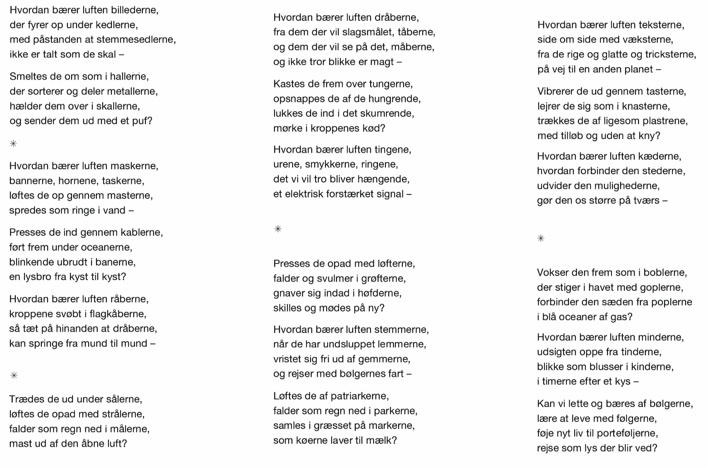
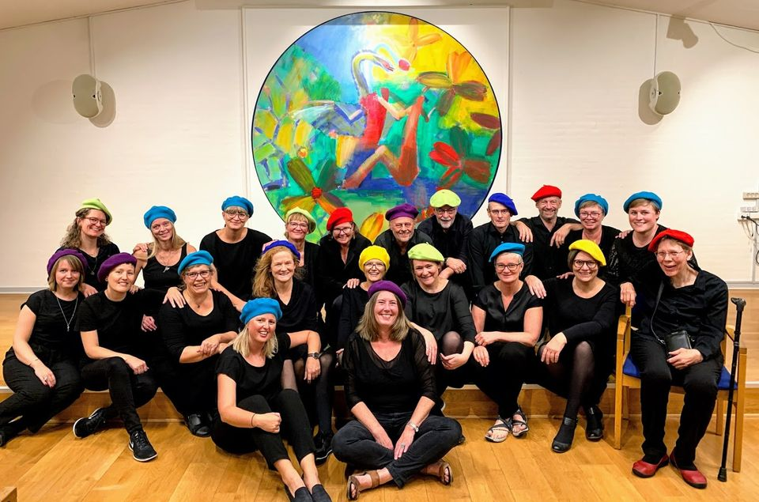

Rejse som lys der blir ved · 2021
“Rejse som lys der blir ved” er bestilt af og uropført til den nordjyske lydkunstbiennale Struer Tracks i august 2021. I september samme år blev værket opført på Gong Tomorrow i gården ved spillestedet ALICE, på Skt. Hans Torv og Nørrebroparken i København.
Transportable højttalere har været en både elsket og udskældt del af kulturlivet under corona epidemien, når de har spredt decibel under nattehimlen i det offentlige rum. Soundbokse spiller hovedrollen i et nyt eksperimenterende korværk, som Anders Lauge Meldgaard har komponeret og indspillet med Holstebro-koret Klang.
”Rejse som lys der blir ved” er titlen på værket, der bliver formidlet via transportable højttalere, som bliver båret på ryggen af performere, mens de bevæger sig gennem byen.
Teksten er skrevet af forfatteren Amalie Smith og tematiserer luften imellem os, det vi deler og som binder os sammen både socialt og fysisk. Værket er formet af en tid med corona og mundbind, hvor vores opfattelse af luften omkring os har ændret sig.
Medvirkende:
Sangere: Koret Klang
Tekst: Amalie Smith
Komposition og synthesizer: Anders Lauge Meldgaard
Koreografisk konsulent: Sara Hamming
Tak til: Struer Tracks og Gong Tomorrow
( ENG )
Experience a new choral piece by Anders Lauge Meldgaard and the choir Klang and lyrics by Amalie Smith performed through mobile loudspeakers carried on the backs of a group of performers in the public space. Follow the event for details about time and place.
Gong Tomorrow is an annual festival for new experimental music and sound art, featuring concerts in extraordinary settings, musical experiments, genre crossovers, talks and workshops, and cross-aesthetic meetings between local as well as international artists. Gong Tomorrow 2021 takes place from 3rd to 10th September in various locations across Copenhagen in cooperation with ALICE cph.
----------------------------------------
Artikkel af Sif Hellerup Madsen fra Struertracks.dk
Den luft vi deler – Anders Lauge Meldgaard komponerer nyt korværk til Struer Tracks
Luft, spyt og dekonstrueret højskolesang er nogle af ingredienserne i komponist og musiker Anders Lauge Meldgaards bidrag til dette års Struer Tracks. Det bliver et nyt korværk for et mobilt højttalerorkester i det offentlige rum.
”Korværkets tekst tematiserer luft. Som vi ånder ud og ånder ind og deles om. Luften kan bære på mange ting, virus for eksempel, eller på billeder, hvis man siger et digt.”
Meldgaard fortæller, at hans værk til Struer Tracks er formet af en tid, hvor vores opfattelse af luften omkring os, har ændret sig.
Men tilbage til begyndelsen. Første del af Meldgaards arbejdsproces var at invitere den danske forfatter Amalie Smith til at skrive en tekst til værket. Og det gjorde hun efter en længere dialog med Meldgaard om forskellige tematikker, som begge kunstnere var optaget af, bl.a. det modstridende i at skrive et korværk i en tid, hvor corona-pandemiens restriktioner i perioder har gjort det svært at synge sammen:
”Teksten har aerosoler som omdrejningspunkt. Altså de bittesmå vandpartikler fra vores spyt, som er i luften og kan bære på fx coronavirus. Og som gjorde, at kor under nedlukningen ikke kunne synge, som de plejede,” fortæller Meldgaard.
Dekonstrueret højskolesang
Amalie Smith er en forfatter, der ofte skriver meget fragmentarisk og eksperimenterende i formen. Men i teksten til Meldgaards værk er hun gået i den modsatte grøft:
”Amalie blev grebet af at arbejde med vers og rim, så teksten er nærmest blevet helt højskolesangbogsagtig. Så det første, jeg gjorde, var at skrive noget, som også kunne lyde sådan.”
Det kom bag på Meldgaard, at det netop var den type tekst, Amalie Smith endte med at skrive: ”Men det har været sjovt at skrive en sang, der følger den form. Og samtidig har jeg været nysgerrig på, hvordan jeg kunne dekonstruere og eksperimentere med det efterfølgende,” fortæller han.
Amalie Smiths tekst skrevet til værket:

Det er det lokale kor ’Klang’ fra Holstebro, der skal indsynge Meldgaards værk, og de vil samtidig blive inddraget i Meldgaards proces:
”De vil gerne være med til at lege og prøve ting af. Vi skal lave øvelser og optage en masse elementer, som skal sættes sammen bagefter til det færdige værk.”
Samtidig har Meldgaard også idéer om, at prøve udvidede teknikker af sammen med koret, så deres kroppe og stemmer kommer i spil på nye måder.
”Jeg går i studiet med et ikke færdigt partitur. Jeg ser det som en indsamling af materiale, jeg kan arbejde videre på,” siger han.
Højttalerkor
Luften er et tema i Amalie Smiths tekst, og derfor ønskede Meldgaard også at bruge luften forstået som det foranderlige og bevægelige i sin komposition:
”Jeg ville gerne væk fra tanken om et kor, der stiller sig op på det lokale torv og synger. Men i stedet få en bevægelighed ind værket, eller en slags koreografi. Værket på Struer Tracks bliver opført via fire højttalere, som skal bæres rundt i det offentlige rum:
”De fire højttalere bliver i sig selv et lille kor. Måske bliver det sådan, at sopranstemmen kommer ud af én højtaler, basserne af en anden osv., så klangene bliver samlet i det øjeblik, de bliver afspillet.”
